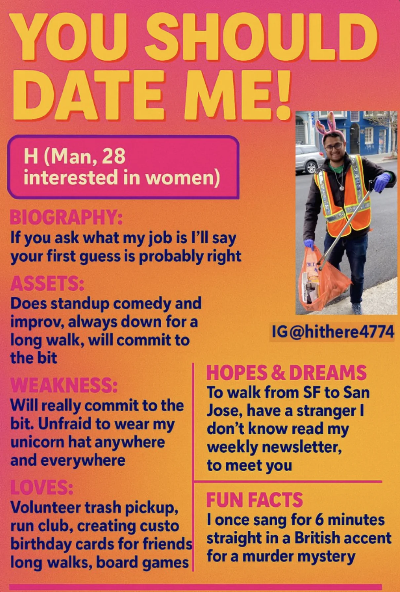
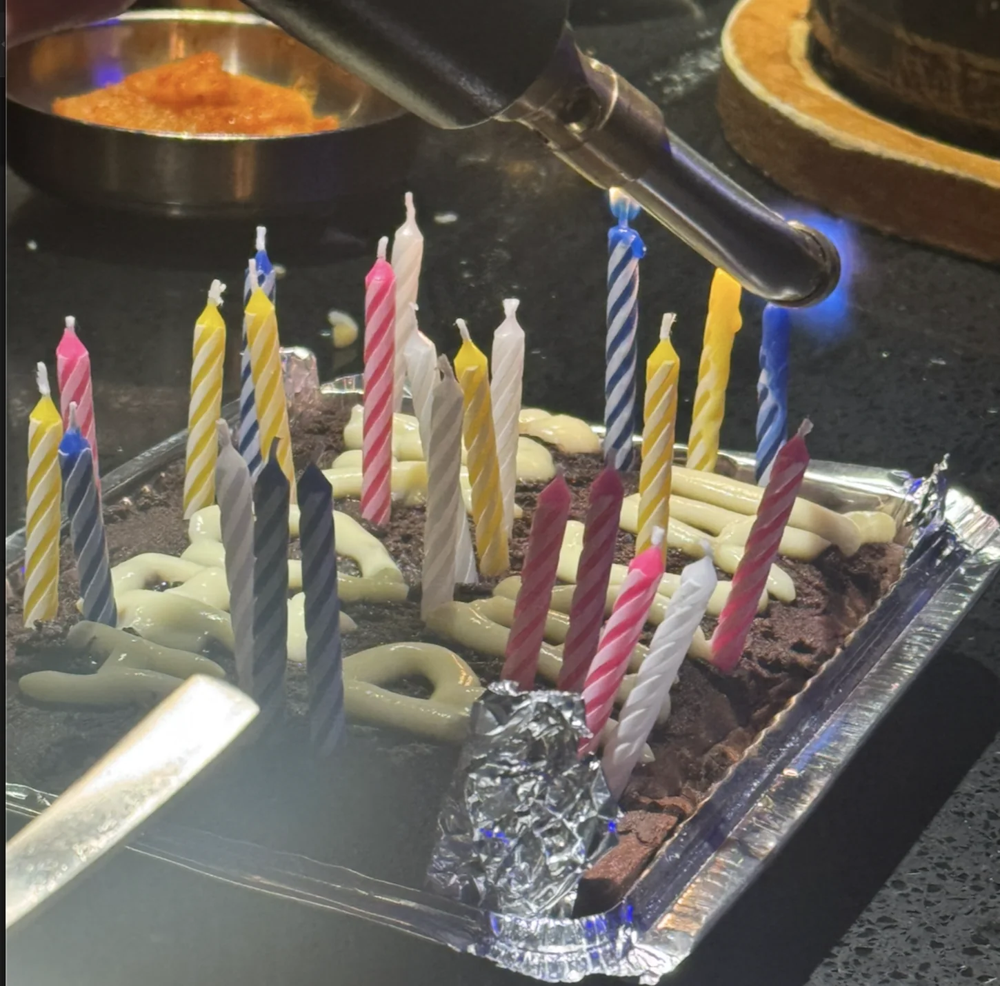
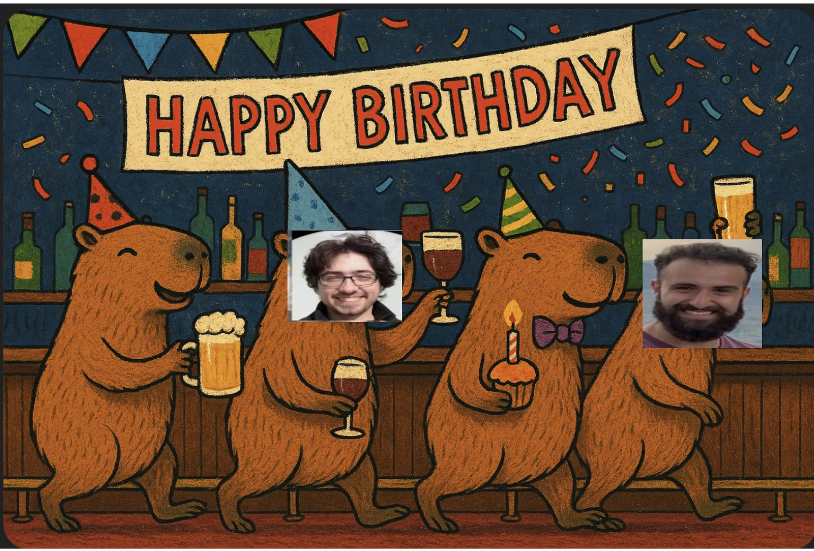
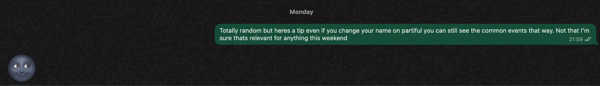
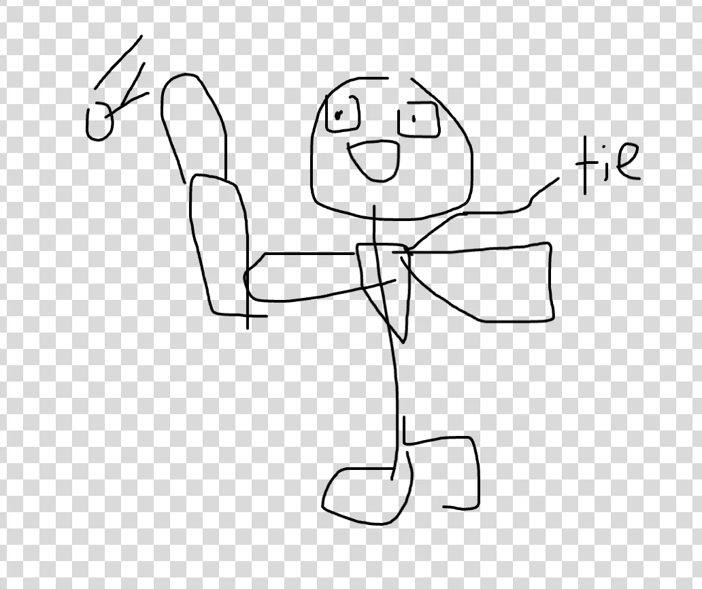

Monday
Today is a pretty normal day. I go to work, I go home and chill. Really starting off the week strong here :D
Tuesday
Today is also a pretty normal day. The one slightly interesting thing is that after work I finalize v2 of the “date me” posters I want to put up. This is what I end up with

Wednesday
Today after work instead of going to run club as per usual I go a friends birthday dinner. We go to Doobu over in Japantown. As per usual I don’t really eat, especially since everything is cheese based but it was a great time!
My friend is really into Capybaras so I wound up getting him a plush capybara
We also got him a birthday cake! Since Doobu uses blowtorches for finishing up the food we have them try to light the candles using a blowtorch which was an interesting experience but admittedly not very effective.

Unfortunately I have yet to deliver it to him but I’m making a custom birthday card that looks something like this!

Thursday
Today during work I surprise some of my coworkers by accurately being able to guess where they live / would live based on their personality and vibes. For example one of my coworkers who is an Account Executive very into Berry’s and has a dog I could immediately peg as a Marina girl. I also predicted that one of my coworkers would stay in the Bay long term and settle down probably around Piedmont with kids in around a decade and he said I was pretty accurate.
After work me and some of my coworkers go out and have dinner. My coworkers are great so the vibes are great despite the grilled chicken being pretty mid. At one point one of my coworkers steps out to take a relatively long phonecall and we are able to surmise that she spent more of it listening than talking based only on the back of her head.
Also it turns out one of my other coworkers also writes a newsletter! His is different from mine though in that he thinks more from the perspective “If I’m catching up with a friend I haven’t seen in 6 months what are some of the big updates I’d give them.”. Its really cool to see other people doing something like this!
Friday
Today after work me and some coworkers hang out for a while and grab drinks / dinner. Between drinks and dinner one of my coworkers (the newsletter one), said he’d make the decision as to whether he’d stay or leave by flipping a coin on his phone. I found that pretty funny and told him it would wind up in the newsletter so here it is :D.
The place we go to dinner is in the Marina but despite that its still a fun time! Interestingly one of the servers there is someone I went to high school with. I didn’t know her all that well and I didn’t really feel like having a reunion right then and there but its still a thing that happened.
After that I go and catch up with one of my old friends who I hadn’t seen in about 6 months. It turns out during the 6 month timeskip he is starting a new job and throwing a party to celebrate! His old job was being a MechE at a farm company so the whole party wound up being farm themed with farming videos playing on tv and farm themed drinks. It was a fun time!
At one point I wind up meeting someone and decide to mess with her a little bit. She asked me what I do for fun and I told her
“On Monday I wake up, go to work, think about my imminent death and go to sleep. Tuesday through Friday are the same as Monday. Over the weekend I wake up, think about my imminent death, and go to sleep.”
Thanks to my deadpan delivery she didn’t know whether I was joking or not. I figure I could either introduce myself to her by saying I like to tell jokes but I figured this would both be more effective and more fun.
Saturday
Today starts off with trash pickup as per usual. We have a pretty big turnout today with 42 people! On the one hand I do really like having a big turnout but on the other it means I can’t talk to everyone I want to :(. There is only so much time in a trash pickup and with so many cool people like your Blairs, your Sohams, your Kaylynns, your Seabasses, your Tommys and many many more it becomes a real pain :(. I juggle through as best as I can but I’m never able to get it quite optimally. During trash pickup I also get some advice on v2 of my date me poster and at the same time I also get advice from someone where she tells me I should consider also asking my parents if they know anybody. Like in the family friend sense. Haven’t really considered that before but who knows.
After that I go to GGP and hang out with some friends. We play Coup for a while and despite my best attempts I’m only ever able to come close to winning and being the one everyone tries to get rid of rather than the winner. We also play Exploding Kittens.
Sunday
Today I made trash pickup history by being the first person ever to wear a suit to trash pickup! The reason I did so was because of an event that I’ll describe slightly later that required formal attire. I figured that my options were to either skip trash pickup or do it in a suit and if you know me you’d probably guess that only one of those was a real option for me. Also during trash pickup I get to meet not one but two of my friends’ Moms which is pretty cool. Perfect time for the suit!
After trash pickup I go to this event which is a “funeral for the forgotten”. Its not a real funeral, its more that one of my friends who was gone traveling for a year is coming back! Originally this was meant to be a surprise but she made a key mistake of making herself (albeit using an alias), as a host on the partiful.
Originally her coming back was meant to be a surprise but because of the key mistake above everyone coming already realized anyway. On Monday when I first got the partiful I decided to not so subtly let her know that I knew she was a host

It was really good seeing my old friend again! She had some pretty interesting adventures going to Turkey, Saudi Arabia, India (where she stayed most of the time), China, and Malaysia. Apparently at one point she briefly joined a cult (emphasis on briefly here).
The one downside was that I definitely took the dress code requirement more seriously most and was probably the best dressed person there. I don’t regret this mind you as I think showing up to trash pickup in a suit makes it all worth it but I was a little bit surprised to be best dressed. Also I forgot that not everyone is as punctual me when I show up at the time the event is supposed to start and the host is still in PJs which was extra funny to contrast against my suit.
We hang out for a while, catch up on life, and play some ping pong. Its my first time really playing ping pong and I was surprised I managed to hold my own relatively well against my friends who played it more (I also played in the suit which I think gave me a bit of a debuff).

After that I go to get KBBQ at good ol Kogi Gogi and then I head home and write the newsletter!